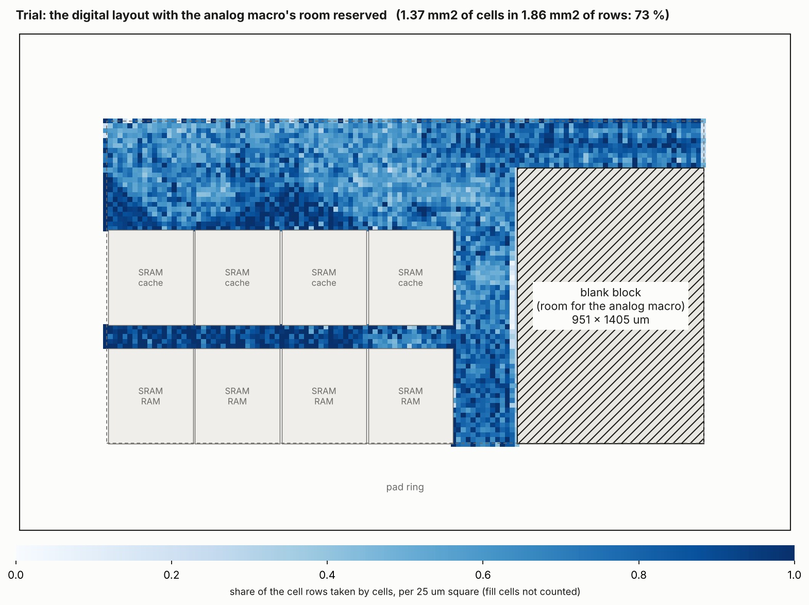

RV328 layout: results
The digital-first build (analog stub, external clock and reset) has been through the LibreLane flow for
the wafer.space GF180MCU half-height slot three times. This document describes the third layout (run4),
which is the one in layout/ and in the viewer, and compares it with the two before it.
The third layout meets timing at 20 MHz at all nine corners with the flow's own constraints, is clean
in routing, DRC (Magic and the foundry deck), antenna, density and layout-versus-schematic, and its
routed netlist passes three of the test programs in gate-level simulation at 20 MHz. Against the
second layout it removes the slow crystal-clock edge, the one constraint exception that covered a real
path, and all but 16 of the 691 slew entries. It is still not ready to submit: the analog blocks are a
stub in this build (they now exist as a macro layout of their own, see analog/README.md, which is not
in this layout; a trial with a blank block of its size routes but has no room left for repair, see
"Trial with the analog block"), and formal equivalence and the
wafer.space precheck have not been run.
The chip is moving to the full-height slot. Measurements show the 2 KB cache of this layout is too
small (docs/cache_study.md). A first full-height layout with a 12 KB three-way cache, a faster
multiplier and room for the analog macro routes cleanly and meets 20 MHz at all nine corners; see
"Full-height layout with the 12 KB cache". It has not been through sign-off checks yet.
Open docs/layout_viewer.html in a browser to look at the result. The outputs of the run are in
layout/ (final GDS, routed DEF, renders, the metrics and timing reports). make render reproduces the
pictures: the four build stages and the finished layout at 8000 pixels with zoom-ins.
Tools: LibreLane 3.1.0.dev3 from the wafer.space project template's Nix environment, PDK gf180mcuD at
the template's pinned revision, 9-track 5 V standard cells (gf180mcu_fd_sc_mcu9t5v0).
Numbers
Built and signed off at a 50 ns clock (20 MHz), with extracted parasitics.
| Quantity | Value |
|---|---|
| Die | 3932 x 2531 um |
| Standard cells (incl. buffers and taps, without fill) | 60156 |
| Standard-cell area | 1.48 mm2 (logic 1.38, taps and row ends 0.10) |
| Share of the cell rows (3.20 mm2) | 46 % |
| Memories (eight macros) | 1.68 mm2 |
| Fill and decoupling cells in the empty rows | 1.71 mm2 |
| Routed wire length | 3.61 m |
| Vias | 270022 |
| Routing DRC violations | 0 |
| Antenna violations (nets / pins) | 0 / 0 |
| Clock target | 50 ns (20.0 MHz) |
| Setup violations (endpoints, all corners) | 0 |
| Hold violations (endpoints, all corners) | 0 |
| Max slew / capacitance / fan-out violations | 16 / 275 / 296 |
| Power estimate (default activity) | 19.2 mW |
| Magic DRC errors | 0 |
| KLayout DRC errors (foundry deck) | 0 |
| KLayout antenna / density errors | 0 / 0 |
| LVS | match, 0 errors |
| Corner | Setup slack (ns) | Implied max clock (MHz) | Hold slack (ns) |
|---|---|---|---|
| max_ff_n40C_5v50 | +15.96 | 29.4 | +0.43 |
| max_ss_125C_4v50 | +5.87 | 22.7 | +1.72 |
| max_tt_025C_5v00 | +14.09 | 27.8 | +0.84 |
| min_ff_n40C_5v50 | +16.13 | 29.5 | +0.36 |
| min_ss_125C_4v50 | +9.83 | 24.9 | +1.35 |
| min_tt_025C_5v00 | +14.34 | 28.0 | +0.66 |
| nom_ff_n40C_5v50 | +16.05 | 29.5 | +0.42 |
| nom_ss_125C_4v50 | +8.01 | 23.8 | +1.53 |
| nom_tt_025C_5v00 | +14.22 | 27.9 | +0.77 |
Corner names: nom/min/max are the interconnect corners, tt_025C_5v00 typical silicon at 25 C and 5.0 V,
ss_125C_4v50 slow silicon at 125 C and 4.5 V, ff_n40C_5v50 fast silicon at -40 C and 5.5 V.
"Implied max clock" is 1 / (period - slack); pin budgets scale with the period, so treat it as a guide.
What the numbers say
- Speed. 20 MHz, the ATmega328PB's top speed grade, is met with 5.9 ns to spare at the slowest corner (slow silicon, 125 C, 4.5 V, worst wiring) and 14 ns on typical silicon. The slowest path is again a CPU path that ends in the register file.
- Hold. Met at every corner, worst margin 0.36 ns (fast silicon).
- Physical checks. Routing 0 violations; Magic DRC 0; foundry KLayout deck 0 (162 rule decks: every deck
except antenna and density, which have their own steps, and circuit-under-pad, which the wafer.space
template leaves out); KLayout antenna and density 0; LVS "Circuits match uniquely". The foundry deck
was run as two halves outside the flow (back-end and front-end rules, commands in
flow/README.md): on this two-core machine a single run of the whole deck did not finish inside the session's limit. - Slew and capacitance. Against the flow's own targets (3 ns transition, 0.2 pF):
- Slew: 16 pins at the slowest corner (691 in the second layout), 3 at the typical corner and at most 1 at the fast ones. The worst is 6.0 ns on one ordinary logic net; the rest are between 3 and 3.6 ns and include the input of the PB0 pad driver and the root buffer of one gated clock. The crystal clock branch, 12.8 ns before, is no longer on the list: it now has its own buffer (14 loads, 0.34 pF). The 6 ns net is the one item here worth fixing by hand before a submission.
- Capacitance: 275 entries at the slowest corner. 74 are the bond pads themselves, 68 are clock-tree nets that the repair steps do not touch, and 133 are ordinary nets, typically 0.25 pF against the 0.2 pF target. None of them causes a timing or slew failure.
- Nearly all of the 296 "fan-out" entries are clock-tree leaf buffers; not a defect.
- Constraint exceptions (in
flow/librelane/chip_top.sdc, with reasons): hold checks from the asynchronous GPIO pins; the reset pin; the static crystal-mode bits; PB6 used as data (it is the clock pin in this build and only reaches synchronisers and the wake latch). The exception for the reset release of the crystal-ready counter is gone: that reset now goes through a two-flop synchroniser and the path is timed like any other. (The old exception was still in the file during this run, but it no longer matched any net, so the results above were obtained without it; it has since been deleted.) - Area and power. 1.48 mm2 of standard cells with their taps, 46 % of the 3.20 mm2 of cell rows;
the other 1.71 mm2 is fill. (Earlier versions of this page said 1.99 mm2 and 62 %. That is the flow's
metric, which counts the four corner cells of the pad ring, 0.50 mm2, as standard cells;
scripts/core_area.pyadds the cells up from the DEF.) 3.61 m of wire, an estimated 19 mW at 20 MHz with default switching activity.
Gate-level simulation
The routed netlist was simulated with the cell delays extracted from the layout (typical corner) and a
20 MHz clock, running the same firmware as the RTL tests (make gl-sdf, make gl-basic; method and
limits in scripts/gl_prep.py).
| Test | RTL, digital-first build, 20 MHz | Routed netlist with cell delays, 20 MHz |
|---|---|---|
| basic | PASS at 2,109,426 ns | PASS at 2,109,431 ns |
| timers | PASS at 2,032,376 ns | PASS at 2,032,381 ns |
| spi | PASS at 1,653,276 ns | PASS at 1,653,281 ns |
Each finishes in the same clock cycle as the RTL, 5 ns later. This shows the netlist the layout was built from boots from an undefined power-up state, runs code from the serial memory through the cache and SRAM macros, and drives the pads correctly with real gate delays and the real clock tree.
Limits: three of the ten tests (the others need the analog model or take hours at gate level); typical corner only; cell delays include each cell's wire load, but wire RC delay is not simulated and setup and hold are not checked, because Icarus Verilog supports neither for this design. Static timing remains the evidence for speed and hold.
What changed between the layouts
| First layout (run2) | Second layout (run3) | Third layout (run4) | |
|---|---|---|---|
| Standard cells | 7-track | 9-track | 9-track |
| Synthesis | area | delay (DELAY 4, ABC buffering and sizing) |
same |
| Clock target in the flow | 80 ns | 55 ns (signed off separately at 50 ns) | 50 ns |
| Timing repair after global routing | off | on | on, with larger slew and capacitance margins |
| CPU clock gate | behind the system clock gate | beside it | beside it |
| Crystal clock branch | unbuffered | unbuffered, 12.8 ns edge | own clock buffer |
| Crystal-ready counter reset | asynchronous | asynchronous, constraint exception | two-flop synchroniser, no exception |
| Slowest corner | fails 12.5 MHz by 12.1 ns (10.9 MHz) | meets 20 MHz, 5.9 ns to spare | meets 20 MHz, 5.9 ns to spare |
| Typical silicon | about 17 MHz | about 28 MHz | about 28 MHz |
| Hold | 12 endpoints fail, up to 0.39 ns | met, 0.33 ns | met, 0.36 ns |
| Slew violations (worst corner) | 7,312 | 691 | 16 |
| Capacitance violations (worst corner) | 490 | 275 | |
| Standard cells | 57,614 | 60,160 | |
| LVS | match only after renaming four nets | match | match |
| Power estimate | 12 mW at 12.5 MHz | 19 mW at 20 MHz | 19 mW at 20 MHz |
Why the first layout was slow: the repair steps only optimise as far as the target asks. They met 80 ns on wire estimates after resizing 11 gates, nothing re-checked after routing, and almost every gate on the slowest path was still the weakest size. Synthesising for delay did most of the work; the 9-track cells are about 15 % faster than the 7-track ones on the same path before layout (68 ns against 79 ns).
What the third layout cost: about 2,500 more cells (4 %), mostly buffers from the stricter slew and
capacitance repair, and no speed. The RTL changes are a clock buffer on the crystal/external clock
(u_xbuf in rv328_core.v) and a reset synchroniser (u_xrst in rv328_clkrst.v); the 16 RTL tests
pass unchanged.
Problems found and fixed on the way
| Problem | Fix |
|---|---|
| Lint error: clock-mux enable flops were bits of one vector clocked by different clocks | one small module per clock source (rv328_clkmux_en) |
SYNTH_HIERARCHY_MODE: deferred_flatten silently dropped every cell without ports (power pads, ID macros) |
back to the default flatten mode |
| Placement could not legalise repeaters in the 10 um slivers between SRAM macros | macros now abut; wider legalisation range |
| Clock-tree synthesis crashed on a clock rooted at a flip-flop output (the divided low-frequency clock) | dedicated clock buffer rv328_clkbuf as the root |
The repair steps chose dlyb_1, a delay cell, as their fan-out buffer and added about 34 ns to the critical path |
delay cells excluded with EXTRA_EXCLUDED_CELLS |
| A false 20 ns "hold" violation: static crystal-mode bits gating a clock input | set_false_path in the SDC |
| LVS mismatch on the four flash pins: pad nets and core nets whose names differed only in case | core-side nets renamed core_fl_* |
| CPU clock arrived several ns after the peripheral clock (gate behind gate), costing thousands of hold buffers | CPU gate moved beside the system gate in rv328_clkrst; simulations cycle-identical |
| Hold repair padded every GPIO input with buffer chains and still could not close them | hold false path on the asynchronous pins |
| The flow's mid-run timing reports only cover the typical corner | judge speed from the post-route report, not from those |
Trial with the analog block

The analog macro is 1380 x 927 um. To find out whether the digital layout still fits beside it in the
half-height slot, the flow was run again with a blank block of that size in the core: no pins, no
content, Metal1 to Metal5 blocked (scripts/gen_analog_blank.py, flow/librelane/trial_*.yaml; same
netlist, clock target and library as the third layout). The cells then fill about 74 % of the rows that
are left, where the third layout fills 46 %.
Result: it can be placed and routed without rule violations, but only with the flow's repair steps after global routing switched off. What is then left unrepaired costs 20 MHz at the slow corner, in the fan-out of one register; every other path still meets, with no margin. Not shown to work, and not shown to be impossible.
| Third layout (no block) | Trial with the block | |
|---|---|---|
| Cell rows | 3.20 mm2 | 1.86 mm2 |
| Cells with taps, share of the rows | 1.48 mm2, 46 % | 1.37 mm2, 73.5 % |
| Global routing: usage, overflow | 17 %, none | 27 %, none |
| Detailed routing: violations | 0 | 0 |
| Wire length, vias | 3.61 m, 270,022 | 4.47 m, 281,584 |
| Timing repair after global routing | on | off: its buffers cannot be placed (below) |
| Setup slack, slow silicon 125 C 4.5 V, worst wiring | +5.9 ns | -7.8 ns (17.3 MHz) on 72 endpoints, all reached from one register; the best of the others +0.02 ns |
| The same with nominal wiring | +8.0 ns | -3.6 ns (18.7 MHz), 32 endpoints from the same register |
| Setup slack, typical silicon | +14.1 ns | +10.8 ns |
| Hold slack, worst | +0.36 ns | -0.06 ns (one endpoint, fast corner) |
| Slew / capacitance entries, worst corner | 16 / 275 | 2,561 / 995 |
| Antenna violations left | 0 | 79 nets (jumpers only; no room for diodes) |
Three floorplans were tried. What each showed:
| Floorplan | What happened |
|---|---|
| 1. Block near the south-east corner with 46 um of cell rows between it and the core edge; memories as in the third layout | Global routing did not converge (stopped by hand after 80 minutes; a short stand-alone run of the same placement left an overflow of 58,372). The placer had filled the rows around the block with ordinary logic, whose wires then had to go round the block |
| 2. Block in the corner itself | Overflow down to 3,788 in the short stand-alone run; the flow's own global routing was stopped in the same loop as the first (see the clock-net setting below, which this run did not have yet, so it is not known whether it would have ended). Seven nets of the pads behind the block had no way round it, and the logic in the 38 um strips beside the memories had to cross the memories on the two metal layers they leave free |
| 3. Block in the corner with a 24 um strip without rows, for the wires of the pads behind it; memories against the south-west corner, the lower row turned upside down, so that all memory pins face the one channel between the rows | Global routing clean after 9 iterations. This is the layout in the table and the picture |
Why the repair steps are off. At this density there is no free row space near where a buffer or a diode is needed. With the repair after global routing on, the third floorplan got 1,600 buffers, the legaliser moved cells by 33 um on average to seat them (wire length by half-perimeter up 29 %), and the routing that had been clean came back with an overflow of 56,440; the antenna step then failed because 25 cells could not be placed at all. So what the table shows is the layout as the clock tree step left it, and its slew entries, its slow-corner timing and its antenna violations are what the repair steps would have had to fix. Each repair was tried once, as the flow is configured: a repair that only makes cells stronger where they stand, or one limited to the nets that fail, was not tried.
The slow-corner failure is of that kind. All 72 failing endpoints are reached from one register, on
the data address bus (u_core.d_addr[3]): on the worst path two of the weakest buffers drive 0.7 and
0.3 pF and a weakest AND-OR gate 0.3 pF, with edges of up to 17 ns, and those three stages cost 21 ns.
Stronger cells in those places would probably close it; whether there is room for them is the question
the trial leaves open.
Settings the trial needed besides the floorplan, all in flow/librelane/trial_blank.yaml: the
legaliser may move a cell across the whole core (buffers for the pads behind the block have no rows
near them); no double spacing for clock nets (where global routing sees congestion it takes that rule
off one net at a time, fifty iterations each); and the first memory 10 um off the core's edge (on the
edge itself the power grid step fails).
What this does not tell: the block has no pins, so the real macro's control and clock nets and their timing are not in it; the macro's own power connection is not in it; and no layout between 46 % and 74 % was tried, so where the limit lies is not known, only that at 74 % this flow has no room left to repair what it finds after routing.
Full-height layout with the 12 KB cache
The half-height slot cannot hold the analog macro with any margin (previous section), and the 2 KB
cache it was sized around is too small for firmware of ordinary size (docs/cache_study.md). This is the
first layout of what the chip needs instead: the full-height slot (1x1, core 3048 x 4238 um, 12.9 mm2),
the 12 KB three-way cache with pinned interrupt handlers, the processor's single-cycle multiplier, and a
blank block where the analog macro goes.

It is placed, routed without violations and meets 20 MHz at all nine corners, with the flow's design and timing repair switched on and cells filling 41 % of their rows. It has been taken as far as static timing and one gate-level test; the sign-off checks of the third layout (DRC decks, LVS, density) have not been run on it.
Third layout (run4, half-height) |
Full-height (full4) |
|
|---|---|---|
| Core area | 5.02 mm2 | 12.92 mm2 |
| Memories | 8 (RAM 2 KB, cache 2 KB) | 31 (RAM 2 KB, cache 12 KB, 3 for tags) |
| Analog macro | not in the layout | blank block of 1405 x 927 um, no pins |
| Standard cells with taps | 1.48 mm2, 46 % of 3.20 mm2 of rows | 1.88 mm2, 41 % of 4.55 mm2 of rows |
| Global routing | 16.8 % of capacity, no overflow | 14.0 %, no overflow |
| Detailed routing | 0 violations, 3.61 m of wire, 270,022 vias | 0 violations, 5.68 m, 368,086 vias |
| Antenna | clean | 0 violating nets after 49 diodes |
| Setup, slowest corner (4.5 V, 125 C, worst-case wires) | +5.87 ns | +0.64 ns |
| Setup, slow corner with nominal wires | +2.50 ns | |
| Setup, typical | +14.09 ns | +10.96 ns (25.6 MHz) |
| Hold, worst corner | +0.36 ns | +0.14 ns |
| Slew / capacitance limits exceeded | 16 / 275 | 94 / 646 |
How it got there:
- Floorplan (
scripts/gen_floorplan_1x1.py): two blocks of memory rows, bottom and top, with the logic, the analog block and one tag memory in a band between them. Rows of memories stand in pairs with their pins facing one 120 um channel. A 60 um strip of cell rows runs along the west, south and north edges so the pads there have cells next to them, and a 346 um column on the east side joins the channels to the logic. The pad ring is the half-height one, with the east and west pads spread over the longer sides. - First run (
full3): routed clean, hold met, setup met at eight corners and missed by 1.57 ns at the slowest one. Of the 108 failing endpoints 98 start at the operand registers of the new multiplier and 10 at a tag memory. The flow repairs timing on the nominal wire model, where that corner had +0.45 ns; the worst-case wire model is 2.0 ns slower on these paths. - Second run (
full4): the same with more repair margin asked for (4.0 ns instead of 2.0 after placement, 3.5 ns instead of 1.0 after global routing). Timing repair after global routing resized 49 cells for 167 endpoints inside that margin. Result as in the table. Run time: 74 minutes to extraction and 8 for the nine timing corners, on two cores. - Gate level: the routed netlist with typical cell delays from this layout passes the
basictest at 20 MHz (boot through the three-way cache built from the foundry memory models, RAM access, multiply and divide, GPIO;GLDIR=build/gl_full scripts/gl_sim.sh). The other nine tests have not been run on it. - 2,338 hold buffers after clock-tree synthesis and 625 after global routing. The clock tree has 8.7 ns of skew between its extremes at the slowest corner; timing is met with it.
What is not good yet:
- Slow edges. 94 pins exceed the slew limit, the worst an 8.2 ns edge on the wire to the PB0 pad (limit 1 ns at a pad, 3 ns elsewhere). The third layout had 16. Long wires to pads were not all buffered; it needs a look at where the flow could not place buffers.
- Margin at the slowest corner is 0.64 ns of 50. It is the multiplier. If that does not hold with
the real analog macro in place, the fallback is the multiplier for the low half of the product only:
the float-heavy benchmark then runs at 0.81 of an ATmega328P's speed instead of 0.97
(
docs/cache_study.md); everything else is unchanged. - The upper clock nets were routed without the double-spacing rule (
CTS_APPLY_NDR: none), as in the trial above.
What this layout does not tell:
- The analog macro is a blank block without pins, and the build still uses the analog stub: its connections to the pads and the core, its supply, and the wires that must pass it are untried, as in the half-height trial.
- No DRC with the foundry decks, no LVS, no density check, no stream-out, and no equivalence check have been run on it.
- The pad ring has the half-height slot's 72 pads. A die twice as tall wants more supply pads on the long sides; IR drop has not been analysed.
- The serial-memory timing with the memory clock at half the system clock, which the measured cache speeds assume, is constrained like the first layout's and has not been looked at separately.
Files: flow/librelane/slot_1x1.yaml, macros_1x1.yaml, full_1x1.yaml, pdn/pdn_cfg_1x1.tcl. The
run directory is not kept in the archive; the timing summary is in docs/full_height_timing.txt.
Not covered
- Formal equivalence of the final netlist against the RTL (
Yosys.EQY) and the manufacturability report: the flow was run in pieces because of the session's time limit, and these were not reached. - Gate-level simulation beyond the three tests above: wire delays, the slow and fast corners, clock switching and sleep modes. That needs a simulator with full SDF support.
- Any analog content in the layout: the analog macro is still the stub here. The macro now exists as a
layout of 1380 x 927 um (1.28 mm2,
analog/layout/README.md). A trial with a blank block of that size in the core ("Trial with the analog block" above) routes, but leaves no room for the flow's timing and antenna repair, and one register's fan-out misses 20 MHz at the slow corner. The full chip needs that closed by hand with no margin, or a larger slot, or a smaller digital layout. The full-height layout above has the room (cells at 41 % of their rows) but also only a blank block. - Review of the pad ring against wafer.space's current bonding rules, and the wafer.space precheck.
- IR-drop and electromigration analysis beyond the flow's default report.
- Timing at the ATmega's own limits (105 C): the library has no such corner; 125 C is more pessimistic.
Before a submission
- Fix the one 6 ns net by hand (a buffer, or
set_max_transitionon it) and re-run from placement. - Run formal equivalence (
Yosys.EQY) and the wafer.space precheck on the final GDS. - Decide what the first silicon is: this digital-first build as it stands (external clock and reset, no ADC, comparator, brown-out detector or internal oscillators), or the full chip, which needs the analog macro finished (rings, hand-off files) and the full-height layout taken through sign-off with the macro in place of the blank block ("Full-height layout with the 12 KB cache").